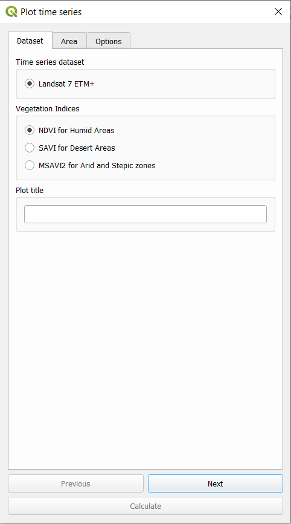
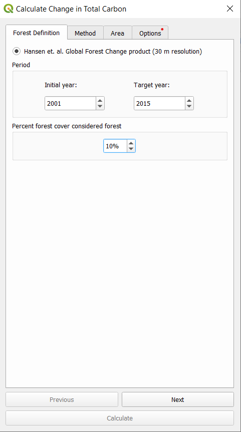
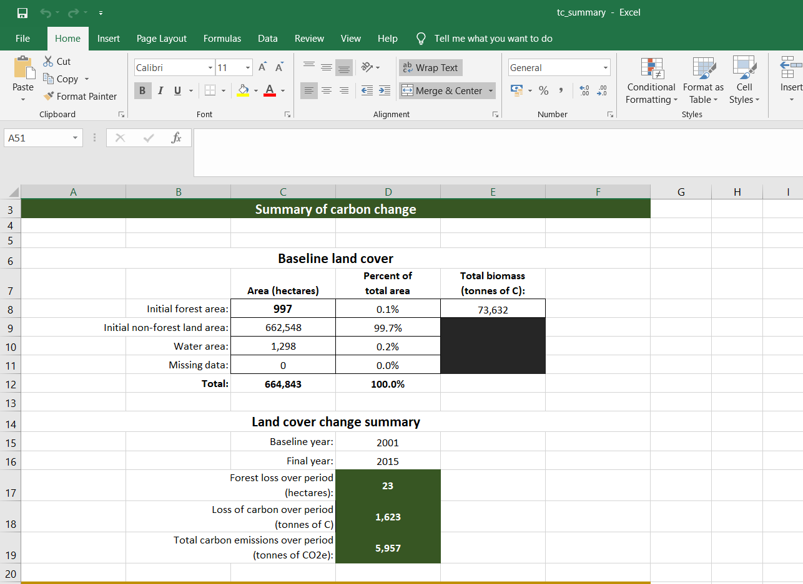
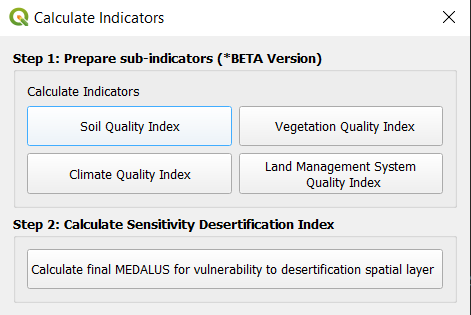
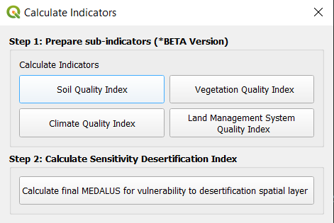
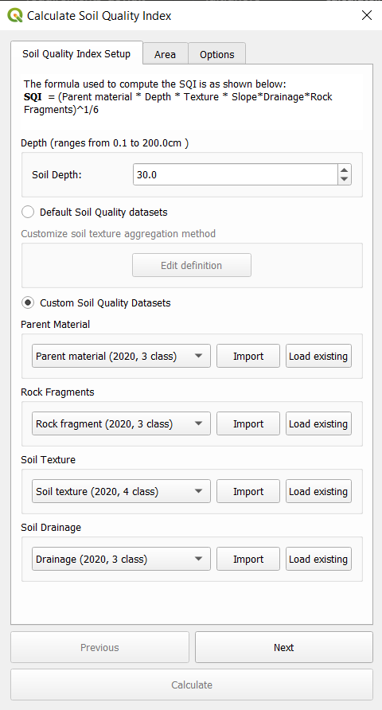
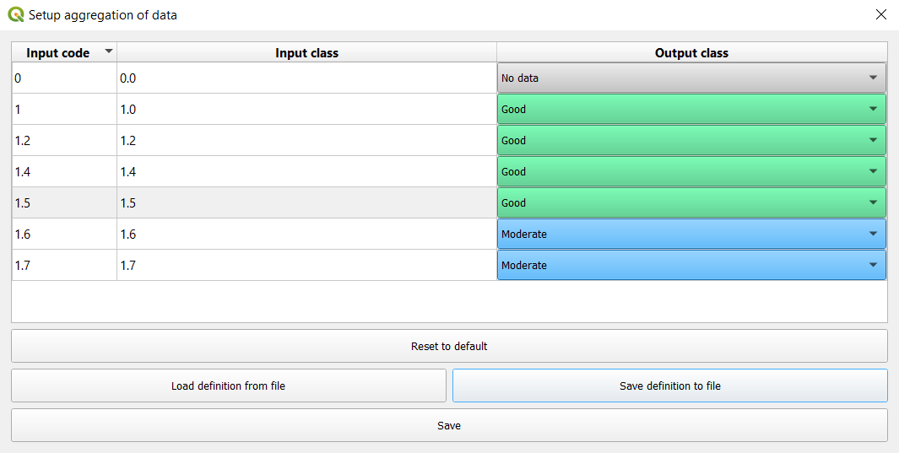
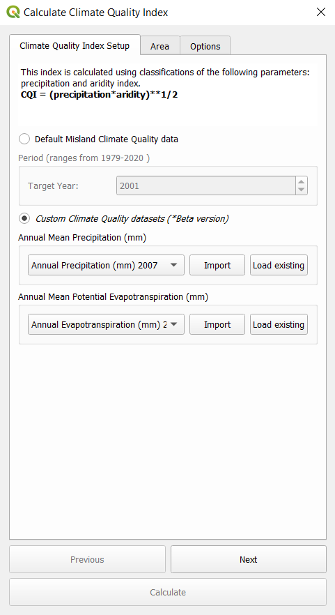

Calculate indicators¶

Sustainable Development Goal 15.3 intends to combat desertification, restore degraded land and soil, including land affected by desertification, drought and floods, and strive to achieve a land degradation-neutral world by 2030. In order to assess the progress to this goal, the agreed-upon indicator for SDG 15.3 (proportion of land area degraded) is a combination of three sub-indicators: change in land productivity, change in land cover and change in soil organic carbon.
Contents
To select the methods and datasets to calculate these indicators, indicators click on the calculator icon highlighted above. This will open up the “Calculate Indicators” dialog box.

Select the Land degradation indicator (SDG indicator 15.3.1) to open the window for this analysis.

There are several options for calculating the SDG 15.3.1 Indicator. MISLAND supports calculating the indicator using the same process as was used by the UNCCD for the default data provided to countries for the 2018 reporting process. The tool also supports customizing this data, or even replacing individual datasets with national-level or other global datasets.
To calculate all three SDG 15.3.1 indicators in one step, using default settings for most of the indicators, click “Calculate all three indicators in one step”.
To calculate one of the three SDG 15.3.1 indicators, using customized settings, or national-level data, click “Productivity”, “Land cover”, or “Soil organic carbon”.
To calculate a summary table showing statistics on each of the three indicators, click “Calculate final SDG 15.3.1 indicator and summary table”. Note that you must first compute the indicators using one of the above options.
To calculate a summary table showing statistics on each of the three indicators for multiple sub-divisions, click “Calculate area summaries of a raster on sub-units”. Note that you must first compute the indicators using one of the above options.
There are three different indicators that are combined to create the SDG 15.3.1 indicator
Productivity: measures the trajectory, performance and state of primary productivity
Land cover: calculates land cover change relative to a baseline period, enter a transition matrix indicating which transitions indicate degradation, stability or improvement.
Soil carbon: compute changes in soil organic carbon as a consequence of changes in land cover.
Note
Refer to the indicator-15-3-1 section of this manual for a detailed explanation of how each of these sub-indicators is computed in MISLAND
There are two ways to calculate the indicators: 1) using a simplified tool that will calculate all three indicators at once, but with limited options for customization, or 2) using individual tools for each indicator that offer complete control over how they are calculated.
Calculate indicators with simplified tool¶
This tool allows users to calculate all three sub-indicators in one step. Select the “Calculate all three sub-indicators in one step” button.
Select the parameters for Setup. The Period is the Initial and Final year for the analysis and select one of the two Land Productivity datasets. Select Next.
Select the Land Cover dataset. The first option is the default ESA dataset.
Select Edit definition to change the aggregation from the ESA Land Cover dataset into 7 classes.

The second option allows users to upload a custom land cover dataset. This requires two datasets to compare change over time. Select Next.

The user can now define the effects of land cover change and how it is classified as degrading or improving.

Select an area to run the analysis or upload a shapefile boundary
Note
The provided boundaries are from Natural Earth, and are in the public domain. The boundaries and names used, and the designations used, in MISLAND do not imply official endorsement or acceptance by Conservation International Foundation, or by its partner organizations and contributors.
If using MISLAND for official purposes, it is recommended that users choose an official boundary provided by the designated office of their country.
Name the task and make notes for future reference
Click on “Calculate” to submit your task to Google Earth Engine

Calculate productivity¶
Note
Refer to the indicator-productivity background information in this manual for a detailed explanation of how productivity is computed.
Productivity measures the trajectory, performance and state of primary productivity using either 8km AVHRR, 250m MODIS or 30m LANDSAT 7 (under development) datasets. The user can select one or multiple indicators to calculate, the NDVI dataset, name the tasks and enter in explanatory notes for their intended reporting area.
Productivity Trajectory¶
Trajectory assesses the rate of change of productivity over time. To calculate trajectory:
Note
Refer to the indicator-productivity-trajectory section in this manual for a detailed explanation of this indicator is computed.
Select an indicator to calculate
Select NDVI dataset to use and select Next
Note
The valid date range is set by the NDVI dataset selected within the first tab: AVHRR dates compare 1982-2015 and MODIS 2001-2016.
In the tab “Advanced”, select the method to be used to compute the productivity trajectory analysis. The options are:
Note
Refer to the indicator-productivity-climate-correction information in this manual for a more detailed explanation of each of these calculations.
NDVI trend: This dataset shows the trend in annually integrated NDVI time series (2001-2015) using MODIS (250m) dataset (MOD13Q1) or AVHRR (8km; GIMMS3g.v1). The normalized difference vegetation index (NDVI) is the ratio of the difference between near-infrared band (NIR) and the red band (RED) and the sum of these two bands (Rouse et al., 1974; Deering 1978) and reviewed in Tucker (1979).
RUE: is defined as the ratio between net primary production (NPP), in this case annual integrals of NDVI, and rainfall. It has been increasingly used to analyze the variability of vegetation production in arid and semi-arid biomes, where rainfall is a major limiting factor for plant growth
RESTREND: this method attempts to adjust the NDVI signals from the effect of particular climatic drivers, such as rainfall or soil moisture, using a pixel-by-pixel linear regression on the NDVI time series and the climate signal. The linear model and the climatic data is used then to predict NDVI, and to compute the residuals between the observed and climate-predicted NDVI annual integrals. The NDVI residual trend is finally plotted to spatially represent overall trends in primary productivity independent of climate.
WUE: is defined as the ratio between net primary production (NPP), in this case annual integrals of NDVI, and evapotranspiration.

Productivity Performance¶
Performance is a comparison of how productivity in an area compares to productivity in similar areas at the same point in time. To calculate performance:
Select the start and end year of the period of analysis for comparison.
Note
Refer to the indicator-productivity-performance section in this manual for a detailed explanation of this indicator is computed.
Productivity State¶
State performs a comparison of how current productivity in an area compares to past productivity. To calculate state:
Define the baseline and comparison periods for the computation of the State sub-indicator.
Note
Refer to the indicator-productivity-state section in this manual for a detailed explanation of this indicator is computed.
The next step is to define the study area on which to perform the analysis. The tool allows selecting the area of interest in one of two ways:
Selects first (i.e. country) and/or second (i.e. province or state) administrative boundary from a drop-down menu.
The user can provide a shapefile, KML, or geojson defining an area of interest. Once this is done, Select Next.

The next step is to write a Task name and some notes to indicate which options were selected for the analysis.

When all the parameters have been defined, click “Calculate”, and the task will be submitted to Google Earth Engine for computing. When the task is completed (processing time will vary depending on server usage, but for most countries it takes only a few minutes most of the time), you’ll receive an email notifying the successful completion.
When the Google Earth Engine task has completed and you received the email, click “Refresh List” and the status will show FINISHED. Click on the task and select “Download results” at the bottom of the window. A pop up window will open for you to select where to save the layer and to assign it a name. Then click “Save”. The layer will be saved on your computer and automatically loaded into yoour current QGIS project.

Calculate land cover¶
Changes in land cover is one of the indicators used to track potential land degradation which need to be reported to the UNCCD and to track progress towards SDG 15.3.1. While some land cover transitions indicate, in most cases, processes of land degradation, the interpretation of those transitions are for the most part context specific. For that reason, this indicator requires the input of the user to identify which changes in land cover will be considered as degradation, improvement or no change in terms of degradation. The toolbox allows users to calculate land cover change relative to a baseline period, enter a transition matrix indicating which transitions indicate degradation, stability or improvement.
Note
Refer to the indicator-land-cover background information in this manual for a detailed explanation of how land cover change is computed.
To calculate the land cover change indicator:
Click on the Calculate Indicators button from the toolbox bar, then select Land cover.

Within the “Land Cover Setup tab” the user selects the baseline and target years

The land cover aggregation can be customized using the ‘Edit definition’ button. The user can define their own aggregation of land cover classes from the 37 ESA land cover classes to the 7 UNCCD categories.
Select the dial button for the “Custom” option and select “Create new definition”
Edit the aggregation suitable for the area of interest
Select “Save definition” and select Next

Within the “Define Degradation tab” user define the meaning of each land cover transition in terms of degradation. The options are: stable (0), degradation (-) or improvement (+). For example, the default for cropland to cropland is 0 because the land cover stays the same and is therefore stable. The default for forest to cropland is -1 because forest is likely cut to clear way for agriculture and would be considered deforestation. The user is encouraged to thoroughly evaluate the meaning of each transition based on their knowledge of the study area, since this matrix will have an important effect on the land degradation identified by this subindicator.
Users can keep the default values or create unique transition values of their own.

The next step is to define the study area on which to perform the analysis. The toolbox allows this task to be completed in one of two ways:
The user selects first (i.e. country) and second (i.e. province or state) administrative boundary from a drop-down menu.
The user can upload a shapefile with an area of interest.

The next step is to add the task name and relevant notes for the analysis.

When all the parameters have been defined, click “Calculate”, and the task will be submitted to Google Earth Engine for computing. When the task is completed (processing time will vary depending on server usage, but for most countries it takes only a few minutes most of the time), you’ll receive an email notifying the successful completion.
When the Google Earth Engine task has completed and you received the email, click “Refresh List” and the status will show FINISHED. Click on the task and select “Download results” at the bottom of the window. A pop up window will open for you to select where to save the layer and to assign it a name. Then click “Save”. The layer will be saved on your computer and automatically loaded into yoour current QGIS project.

Calculate soil carbon¶
Soil Organic Carbon is calculated as a proxy for carbon stocks. It is measured using soil data and changes in land cover.
Note
Refer to the indicator-soc background information in this manual for a detailed explanation of how soil organic carbon change is computed.
To calculate degradation in soil organic carbon:

Select Soil organic carbon button under Calculate Indicators

The Land Cover Setup tab allows the user to define the period for analysis with the baseline and target year. Users can select the Edit definition button to change the land cover aggregation method or upload a datasets.

The “Advanced” tab allows users to specify the Climate regime.

Users can select an area or upload a polygon shapefile for analysis

The next step is to add the task name and relevant notes for the analysis.
When all the parameters have been defined, click “Calculate”, and the task will be submitted to Google Earth Engine for computing. When the task is completed (processing time will vary depending on server usage, but for most countries it takes only a few minutes most of the time), you’ll receive an email notifying the successful completion.
When the Google Earth Engine task has completed and you received the email, click “Refresh List” and the status will show FINISHED. Click on the task and select “Download results” at the bottom of the window. A pop up window will open for you to select where to save the layer and to assign it a name. Then click “Save”. The layer will be saved on your computer and automatically loaded into your current QGIS project.

Compute SDG Indicator 15.3.1¶
Note
Refer to the indicator-15-3-1-combining-indicators section of this manual for a detailed explanation of how the sub-indicators are combined to calculate the final SDG 15.3.1 indicator.
Once you have computed the three sub-indicators (productivity, land cover and soil organic carbon), and they are loaded into the QGIS project. Click on the Calculate icon (|iconCalculator|). This will open up the “Calculate Indicator” dialog box. This time click on Step 2 “Calculate final SDG 15.3.1 indicator and summary table”.
The input window will open already populated with the correct sub-indicators (that if you have them loaded to the QGIS map)

Select the name and location where to save the output raster layer and the excel file with the areas computed.

Define the area of analysis. In this example, the country boundary.

Give a name to the task and click “Calculate”

This calculation is run on your computer, so depending on the size of the area and the computing power of your computer, it could take a few minutes. When completed, the final SDG indicator will be loaded into the QGIS map and the Excel file with the areas will be saved in the folder you selected. when done, a message will pop up.

Click OK and two layers will be loaded to your map: the 5 classes productivity and the SDG 15.3.1 indicators.

If you navigate to the folder you selected for storing the files, you can open the Excel files with the areas computed for each of the sub-indicators and the final SDG. NOTE: You may get an error message when opening the file, just click ok and the file will open regardless. We are working to fix this error.
Compute Vegatation Indices¶
Land degradation hotspots (LDH) are produced via the analysis of time-series vegetation indices data and are used to characterize areas of different sizes, where the vegetation cover and the soil types are severely degraded. Vegetation loss/gain hotspots will be calculated based on time series observation of selected suit of vegetation indices depending on the climatic zones and terrain morphology of the North African countries
Vegation Indices computed from Landsat 7 ETM+ include:
NDVI (humid, sub-humid and semi-arid zones)
DVI is preferable for global vegetation monitoring since it helps to compensate for changes in lighting conditions, surface slope, exposure, and other external factors. NDVI is calculated in accordance with the formula:

NIR – reflection in the near-infrared spectrum RED – reflection in the red range of the spectrum
According to this formula, the density of vegetation (NDVI) at a certain point of the image is equal to the difference in the intensities of reflected light in the red and infrared range divided by the sum of these intensities.
This index defines values from -1.0 to 1.0, basically representing greens, where negative values are mainly formed from clouds, water and snow, and values close to zero are primarily formed from rocks and bare soil. Very small values (0.1 or less) of the NDVI function correspond to empty areas of rocks, sand or snow. Moderate values (from 0.2 to 0.3) represent shrubs and meadows, while large values (from 0.6 to 0.8) indicate temperate and tropical forests.
MSAVI2 (arid and stepic zones)
MSAVI2 is soil adjusted vegetation indices that seek to address some of the limitation of NDVI when applied to areas with a high degree of exposed soil surface.It eliminates the need to find the soil line from a feature-space plot or even explicitly specify the soil brightness correction factor:

SAVI (desert areas)
SAVI is used to correct Normalized Difference Vegetation Index (NDVI) for the influence of soil brightness in areas where vegetative cover is low. Landsat Surface Reflectance-derived SAVI is calculated as a ratio between the R and NIR values with a soil brightness correction factor (L) defined as 0.5 to accommodate most land cover types.

To compute the above vegetation indices, click on the calculator icon . This will open up the “Calculate Indicators” dialog box.
Select the “Vegetation Indices Time-Series” to open the window for this analysis.

From the list of vegetation indices provided select your desired index and provide a title to your plot. Select the area of interest i.e point or polygon, label your task and calculate the index.
To view your final plot go to “Download results from Earth Engine” and refresh the list, then select the task and download the results. This will plot a graph of your index over time.


Compute Forest Fires¶
Burnt areas and forest fires are be highlighted and mapped out form remotely sensed Landsat 8 /Sentinel 2 data using the Normalized Burn Ratio (NBR). NBR is designed to highlight burned areas and estimate burn severity. It uses near-infrared (NIR) and shortwave-infrared (SWIR) wavelengths. Before fire events, healthy vegetation has very high NIR reflectance and a low SWIR reflectance. In contrast, recently burned areas show low reflectance in the NIR and high reflectance in the SWIR band.
The NBR is be calculated for Landsat/Sentinel images before the fire (pre-fire NBR) and after the fire (post-fire NBR). The difference between the pre-fire NBR and the post-fire NBR referred to as delta NBR (dNBR) is computed to highlight the areas of forest disturbance by fire event.
Classification of the dNBR is be used for burn severity assessment, as areas with higher dNBR values indicate more severe damage whereas areas with negative dNBR values might show increased vegetation productivity. dNBR is classified according to burn severity ranges proposed by the United States Geological Survey(USGS)
To compute the above forest fires, click on the calculator icon . This will open up the “Calculate Indicators” dialog box.
Select the “Forest Degradation Hotspots” to open the window for this analysis then select Forest Fires.

Select either “Landsat 8” or “Sentinel 2”, a Pre-fire and Post-fire perio, the area of interest then calculate your parameters.

To view your final result go to “Download results from Earth Engine” and refresh the list, then select the task and download the results. This will add 3 datasets to the map view i.e Prefire NBR, Postfire NBR and dNBR imagery.
Compute Forest Change and Total Carbon & Summary¶
The quantification of the forest gain/loss hotspots will be based on pre-existing high-resolution global maps derived from Hansen Global Forest change dataset that can be accessed using Google Earth Engine API. The maps are produced from time-series analysis of Landsat images characterizing forest extent and change over time.
Step 1: Compute Forest Change and Total Carbon¶
To compute Forest Change and Total Carbon, click on the calculator icon . This will open up the “Calculate Indicators” dialog box.
Select Forest Change and Total Carbon and select Step 1, calculate Forest Change and Total Carbon to open the window for this analysis.


Provide an Initial and Target year for the Hansen Global Forest Change dataset. Also provide a value considered forest cover percentage.
Next select the above ground biomass dataset to be used and the method for calculating the root to shoot ratio. Procees to select the area of interest and label your task then calculate.

To view your final result go to “Download results from Earth Engine” and refresh the list, then select the task and download the results. This will add 2 datasets to the map view i.e Total carbon and Forest loss

Step 2: Generate Carbon Change Summary¶
To generate a carbon change summary, select Step 2, Calculate carbon change summary table to open the window for analysis.

Provide the input datasets generated from step 1 (Auto-detected if already loaded onto the map view).

Set the output location for the summary table file, select the same area of interest as in step 1 and calculate.

A summary file in xlsx format will be generated on completion similar to the one shown below.
Compute Mediterrenean Desertification and Land Use (MEDALUS)¶
The Mediterranean Desertification and Land Use (MEDALUS) is the name of a project supported by Europe to assess, model and understand the desertification phenomena that increasingly affect the Mediterranean area. It provides a satisfied result about land degradation vulnerability.
The MEDALUS approach identifies environmentally sensitive areas (ESAs) through the Environmentally Sensitive Area Index (ESAI). This index can be used to obtain an in-depth understanding of the parameters causing the desertification threat at a certain point. This approach is simple, robust, widely applicable, and acceptable to new indicators and parameters and can be adjusted to several level scales. , the method was used for the analysis of the main indicators identified to be driving forces of land degradation.
Note
Maintain the same area of interest for all computations within MEDALUS.
1. Soil Quality Index (SQI)¶
Soil is a crucial factor in evaluating the Environmental Sensitivity of an ecosystem, especially in the arid, semi-arid and dry sub-humid zones. Soil properties related to desertification and degradation phenomena affect two principal parameters: (i) water storage and retention capacity; (ii) erosion resistance.
The formula used to compute the SQI is as shown below:
SQI = (Parent material x Depth x Texture x Slope x Drainage x Rock Fragments)^1/6
Default datasets used for sqi are as shown below:
Indicator |
Variables |
Data Source |
|---|---|---|
Soil Quality Index |
Slope |
|
Soil Depth |
Custom User Input |
|
Rock Fragments |
||
Parent Material |
||
Drainage |
||
Soil Texture |
Soil Quality Index can be calculated in two ways:
Using default data (Computed on Google Earth Engine)
Using Custom data (Computed locally on device)
a. Using default data (Computed on Google Earth Engine)¶
Inorder to compute Soil Quality Index using default data use the following steps.
First open the calculate indicators toolbox and select MEDALUS then select the Soil Quality Index option as shown.
 

Input soil depth (cm) and edit soil texture aggregation method according to case study as shown. This will reclassify soil depth values according to the definition selected.


Proceed to select an area of interest and run the computation.
b. Using Custom data (Computed locally on device)¶
This step requires the data to be available locally. First Input soil depth (cm) then Select Custom soil quality datasets instead of default and import sqi datasets as below.
Select import and select a raster or vector dataset of interest. Select the band number for the raster dataset. Input the aggregation definition, study year and the reclassified output destination file as shown:

Ensure to reclassifiy values correctly according to case study. Once all 4 datasets are imported proceed to select an area of interest and run the computation. You will be required to select a destination for your output file.
2. Vegetation Quality Index (VQI)¶
The Vegetation Quality index is derived as the geometric mean of the characteristics of the vegetation. Fire Hazard layers (RI), Fire Resistance (FR), drought (RS), vegetation erosion protection (PE) and cover plant (CV) according to the following formula:
VQI = (RI x PE x RS x CV) ^ ¼
Default datasets used for vqi are as shown below:
Indicator |
Variables |
Data Source |
|---|---|---|
Vegetation Quality Index |
Fire Risk |
|
Drought Resistance |
||
Erosion Protection |
||
Plant Cover |
To compute vegetation quality index, select Vegetation Quality Index option under the MEDALUS toolbar. For each of the 3 datasets, i.e - Fire Risk - Drought Resistance - Erosion Protection

Select the land cover year and an aggregation definition or use default set aggregation. This will reclassify land cover classes based on definition provided.

For Plant cover, select a start and end date. Proceed to select an area of interest and run the computation.
3. Climate Quality Index (CQI)¶
Climate quality is assessed on the basis of how it influences water availability to the plants. The climate quality index, according to the MEDALUS approach, is obtained by cross-referencing the three layers of information namely precipitation and aridity index using the following equation:
CQI = (precipitation x aridity index) ^ 1/2
Default datasets used for CQI are:
Indicator |
Variables |
Data Source |
|---|---|---|
Climate Quality Index |
Precipitation |
TerraClimate Monthly Climate and Climatic Water Balance for Global Terrestrial Surfaces |
Potential Evapotranspiration |
TerraClimate Monthly Climate and Climatic Water Balance for Global Terrestrial Surfaces |
Climate Quality Index can be calculated in two ways:
Using default data (Computed on Google Earth Engine)
Using Custom data (Computed locally on device)
a. Using default data (Computed on Google Earth Engine)¶
Select a year of study between 1979-2020. Proceed to select and area of interest and run the computation.

b. Using Custom data (Computed locally on device)¶
This step requires the data to be available locally. Load both a potential evapotranspiration and precipitation dataset to the plugin as shown below.
Proceed to select an area of interest and run the computation. You will be required to select a destination for your output file.
4. Management Quality Index (MQI)¶
The Management quality index, according to the MEDALUS approach, is obtained by cross-referencing the two layers of information namely Land-Use intensity (LU) and Population Density (PD) using the following equation:
MQI = (LU X PD)^1/2
Default datasets used for MQI are:
Indicator |
Variables |
Data Source |
|---|---|---|
Management Quality Index |
Land Use Intensity |
|
Population Density |
GPWv411: Population Density (Gridded Population of the World Version 4.11) |
To compute vegetation quality index, select Management Quality Index option under the MEDALUS toolbar. Select the land cover year an and set aggregation definition for Land Use Intensity. This will reclassify land cover classes based on definition provided.


Proceed to select an area of interest and run the computation. You will be required to select a destination for your output file.
Environmentally sensitive area (ESA) Index (Combined Desertification Layer)¶
The environmentally sensitive area (ESA) index (ESAI) is computed according to the original procedure as a geometric mean of the four quality values recorded at each location (i.e., in each elementary pixel; Equation 2):
ESAI = (SQI x VQI x CQI x MQI) ^ 1/4
To compute the final desertification layer all MEDALUS subindicator must be already computed i.e SQI, VQI, CQI, MQI. In the MEDALUS toolbox select Calculate final MEDALUS option as shown below:

Load all 4 layers to the plugin, select the area of interest and compute the ESAI. You will be required to select a destination for your output file.
Note
All layers will be automatically loaded into the plugin if they are available and loaded within QGIS.